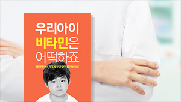
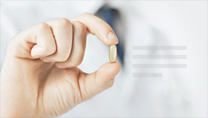
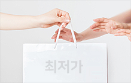

운영지원 서비스
인테리어.POP정기구독.판매가 동향
인테리어에서 의약품 판매가 동향.의약품 정보 검색까지 약국의 전문성을 높여드립니다.
-

약국 시즌·컨텐츠 POP다운로드
다른 약국과 차별화된 POP제작, 약국경영에
필요한 POP를 제공해 드립니다. 약국 추천 POP -
의약품 가격 Trend에 대한 정보 제공
회원님께서 판매하고 계신 상품의 가격을 등록해 주시면
등록하신 상품에 대한 타 회원님들의 판매가 정보를
제공 받으실 수 있습니다. 판매가 동향 -

약국에 필요한 의약품 정보를 무료검색
KIMS의약품 정보 서비스를 통해 의약품과 관련된 모든
정보를 무료로 제공해드리고 있습니다. 의약품 정보
의약품 데이터분석.지식공유.포인트샵
전문강사의 세미나, 빅데이터를 통한 시장분석, 최저가 쇼핑.기프티콘까지 특별한 혜택을 누리세요!
-
 경영에 필요한 유명 전문강사의
경영에 필요한 유명 전문강사의
실시간 화상세미나 유명 약사님의 복약지도와 세무.노무.법률 등 주제별 전문강사가 약국 운영에 도움을 드립니다. 라이브세미나 -
공공 빅데이터를 활용한
각종 분석자료 제공 상권분석.처방현황.고객분석.소비예측 등
공공데이터를 활용한 약국의 빅데이터를
더샵에서 확인해서 미리 대비해보세요. 빅데이터 -

약사분들만을 위한
인터넷 최저가 포인트 샵 약사분들을 위한 특별혜택, 제로샵몰을
통해 여러 참여 브랜드 상품들을
인터넷 최저가로 만나실 수 있습니다. 포인트샵 -
소중한 순간, 마음으로 전하는
새로운 방법! 기프트콘 커피/음료, 베이커리/도넛, 버거/피자 등
고마운 마음을 이제 기프티콘으로
간편하게 전하세요! 기프트콘
약국지원서비스는 컨텐츠를 무료로 제공하고 있으며, 일부 서비스는 더샵 플러스포인트로 이용하실 수 있습니다.